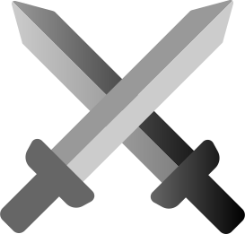
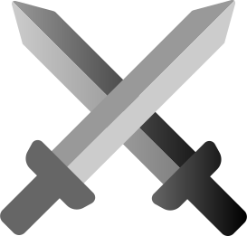
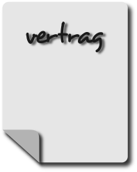
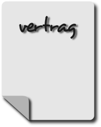
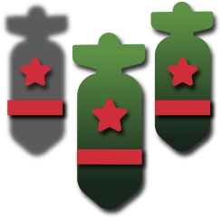
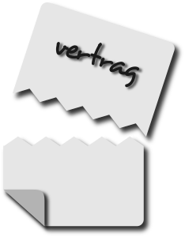

krieg und streit


 

der streit beginnt indem
nordkorea versucht mit
militärischer gewalt südkorea
zu besetzen
1950 beginnt der koreakrieg
und somit der kampf um das land
nordkorea wird unterstützt von
der sowjetunion und china
südkorea wird unterstützt von
den usa und der uno


1953 einigen sich beide länder
vertraglich auf einen
waffenstillstand, es ist jedoch
kein friedensvertrag
die grenze ist die heutig
bekannte landesgrenze
 


2006 provoziert nordkorea mit
atomwaffentests

2013 werden mehr illegale
raketentests durchgeführt
die uno verhängt reiseverbot
nach nordkorea und schließt
deren landes bankkonten
nordkorea kündigt den
waffenstillstand von 1953
dabei steht nordkorea alleine
da und südkorea wird unterstützt
von uno, usa und japan
